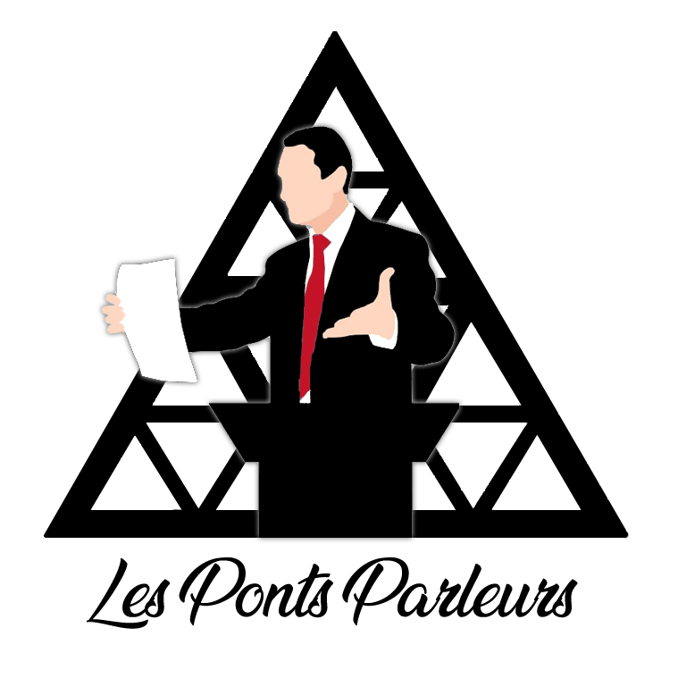
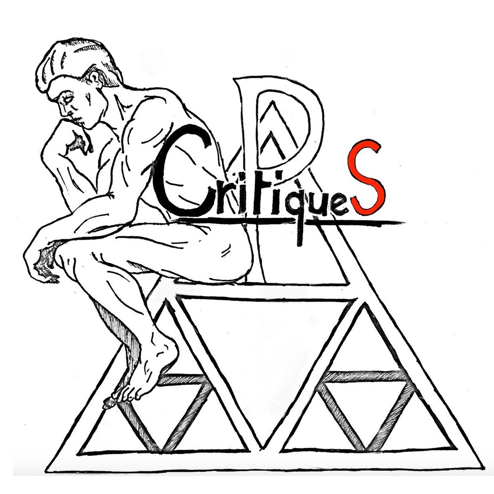
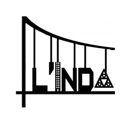
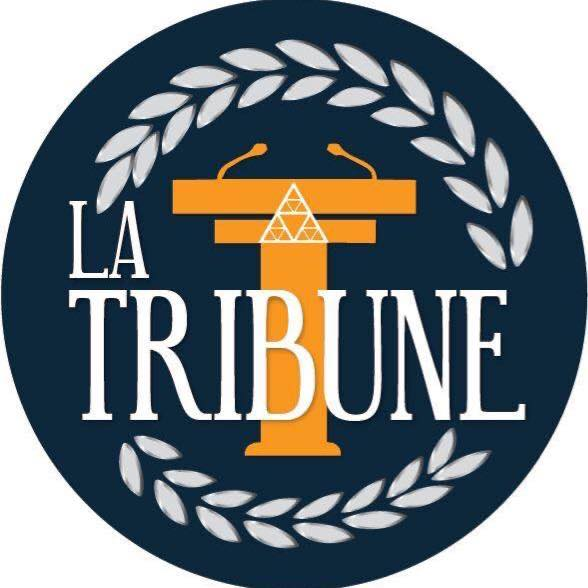
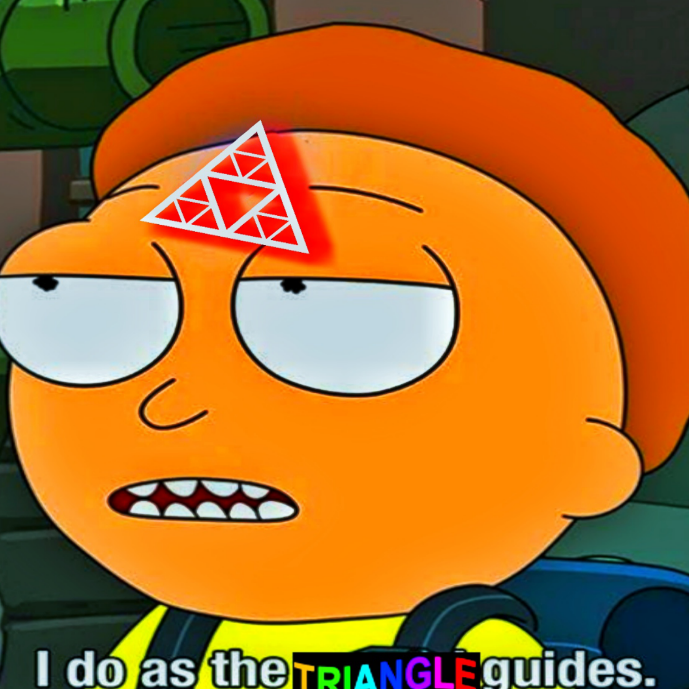
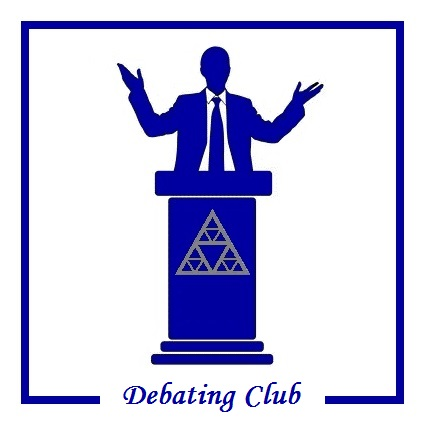
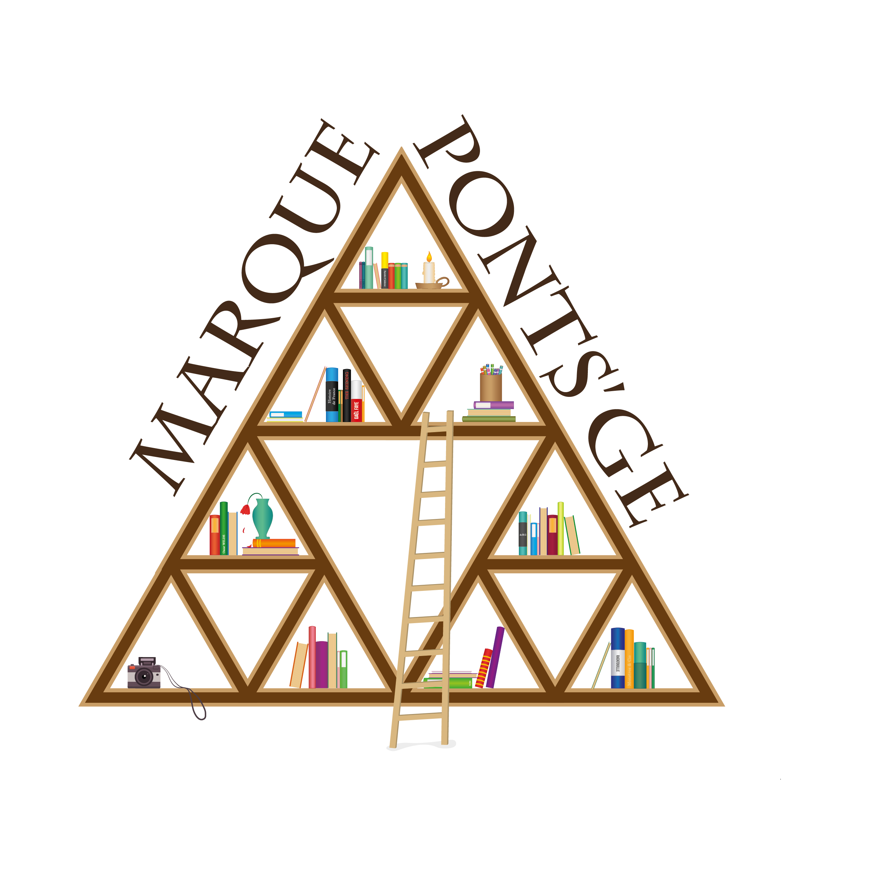

 Tu penses que l’éloquence ce n’est pas réservé aux facs de droits et aux écoles de commerce ? Tu as envie d’améliorer tes compétences d’orateurs en débâtant sur des sujets allant de légalisation de la peine de mort jusqu’à l’indépendance de la Corse ? Alors ce club est fait pour toi !
Néophyte ou confirmé tu trouveras ta place dans cette chaleureuse équipe, alors viens faire porter ta voix dans les plus grands amphithéâtres de France et de Navarre.
×
Gala
 Ponts Critiques est un club qui se fixe pour objectif d'apporter une compréhension plus fine des enjeux politiques modernes aux étudiants des Ponts.
Pour ce faire, nous nous proposons d'organiser :
- Des débats organisés autour de thèmes majeurs et des idées qui gravitent autour d'eux.
- Des conférences au sein de l'Ecole, afin de faire venir des intervenants qui inspirent et font réfléchir.
- Une plateforme de partage autour de la politique et de l'actualité, de manière à y rester sensible.
×
Genius
 Te tenir informé sur la vie à l’école mais aussi te permettre de laisser libre cours à ta créativité, ce sont les missions de l’Indépondant ! Interviews, actus, jeux, tu y trouveras de tout pour te renseigner et te divertir. Que tu te sentes l’âme d’un reporter ou que tu aies juste envie de t’exprimer, n’hésite pas à rejoindre l’équipe de rédaction du journal.
×
La tribune
 La Tribune ENPC est un club du BDE qui organise des conférences aux Ponts. Le but est de traiter des sujets différents des conférences habituelles organisées par l'admin : histoire, politique, actualités.
×
Memes Ponts Club
 À la recherche de 3/4 ? De memes deep-fried comme il faut et autres dankitude ? Neurchi de Poutres de Saint-Venant à coefficients de Young élevé est là pour toi. Le MPC représente également l’école la plus solide de la neurchisphère pour régaler chaque année une génération de normies en envoyant une déléguation à la Coupe du meme des écoles
×
Debating club
 If I told you I would rather live in a strong dictatorship than in a weak democracy, what would you answer me ? How could you defend vegetarianism when your favorite dish is a grilled steak with salty french fries ? Train yourself in our famous Ponts English Debating Club ! Playing roles, arguing like true scandalous politicians, and shouting at other schools is our speciality... In fact, you could even be part of the team to face the greatest parisian universities (such as X, HEC, Mines, Sciences Po...) in a prestigious debating tournament.
×
Club lecture
 Tu veux lire mais tu ne sais plus quoi ? Tu as lu un livre mais ton entourage en a marre de t'entendre radoter sur tes lectures ? Viens partager et t'inspirer au club lecture, présente ton livre, et après deux parts de gâteau, repars avec un nouveau !